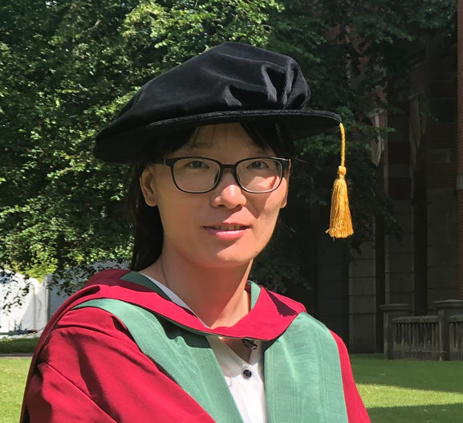

Liyan Song (宋丽妍）
Associate Professor, PhD supervisor (博导)
School of Software, Faculty of Computing, Harbin Institute of Technology (HIT), Harbin, China
Official Homepage: https://homepage.hit.edu.cn/songliyan
Contact
songly[at]hit[dot]edu[dot]cn
sunnysong14[at]]gmail[dot]com
New Technology Building,
92 Xida Street, Nangang District, 154001, Harbin, P.R. China

Short Bio
In December 2023, I moved to Harbin Institute of Technology (HIT) as Associate Professor. In December 2019, I joined Southern University of Science and Technology (SUSTech) as Research Assistant Professor. In March 2019, I joined the University of Birmingham as Research Fellow.
I obtained my PhD degree from School of Computer Science of the University of Birmingham under the supervision of Prof. Xin Yao (co-supervised by Dr. Leandro L. Minku).
Previously, I received my BSc and MSc degrees from School of Mathematics of Harbin Institute of Technology.
个人简介
宋丽妍博士，现任哈尔滨工业大学计算学部软件学院副教授、博士生导师。本科、硕士毕业于哈尔滨工业大学数学学院，博士毕业于英国伯明翰大学计算机学院，师从姚新教授。博士毕业后，曾任职英国伯明翰大学Research Fellow、南方科技大学的研究助理教授（副研究员）。
研究方向涵盖智能软件工程、机器学习、可解释人工智能等领域。
主持国自然面上基金、国自然青年基金（已结题）、黑龙江省面上基金、机器人学国家重点实验室开放课题（已结题），并作为核心研究员协助PI完成华为-南科大RAMS项目2项。曾任IEEE CIS subcommittee Chair，参与编撰Springer学术书籍 Artificial Intelligence in Software Project Management。
Opening
We are pleased to invite applications from highly motivated PhD, Master, and visiting students with strong academic interests or backgrounds in intelligent software engineering, machine learning, and artificial intelligence. Ideal candidates should posses a deep interests in research and demonstrate good capability in coding and/or math.
Please send me an email (with your CV).
诚挚招生
诚招2026年考研生！
诚招有志于从事智能软件工程、机器学习、可解释人工智能研究的 本科生、硕士生、博士生 加入！！！
拟申请的同学请将简历、成绩单等发送至 Email：songly@hit.edu.cn。
Research Interests
My main research interests are machine learning and its applications to predictive software engineering. Currently, I am working on
- data stream learning, verification latency, class imbalance learning, label noise, ensemble learning, unsupervised learning, and Bayesian regression with small data
- applications of the above to predictive software engineering such as software defect prediction and software effort estimation.
I am also working with evolutionary computation, deep learning, and their applications to (e.g.) image recognition and network privacy.
I am OPEN novel and relevant research areas if you can convince me of their practical significance.
Education
- PhD in Computer Science, University of Birmingham, Birmingham, UK.
Supervisor: Prof. Xin Yao.
Thesis title: Learning to Cope with Small Noisy Data in Software Effort Estimation.
*(Thesis available here and also officially available here. Pass the viva with minor revisions on 30 Nov. 2018. PhD officially awarded on 12 July 2019)
- MSc in Mathematics, Harbin Institute of Technology, Harbin, China.
Supervisor: Prof. Chiping Zhang
- BSc in Mathematics, Harbin Institute of Technology, Harbin, China.
Supervisor: Prof. Chiping Zhang
Work Experience
- 2023/12-present, Associate Professor, School of Software, Faculty of Computing, Harbin Institute of Technology, Harbin, China.
- 2019/12-2023/12, Research Assistant Professor (副高、硕导), Department of Computer Science and Engineering, Southern University of Science and Technology, Shenzhen, China.
Team leader: Prof. Xin Yao
- 2019/03-2019/11, Research Fellow, School of Computer Science, University of Birmingham, Birmingham, UK.
Supervisors: Prof. Leandro L. Minku
- 2015/11-2016/10, Senior Research Assistant, Department of Computer Science, Hong Kong Baptist University, Hong Kong, China.
Supervisor: Prof. Haiping Lu (now moved to University of Sheffield, UK)
- 2012/01-2012/10, Research Assistant, Department of Computer Science, Hong Kong Baptist University, Hong Kong, China.
Supervisor: Prof. Byron Choi
Teaching
- [22CS31080F] Essential Mathematics for Artificial Intelligence 人工智能数学基础, for undergraduate students (2025Spring)
Grants
- 概念漂移主动感知的在线即时软件缺陷预测研究，国家自然科学基金面上项目 (National Natural Science Foundation), No.62572154, 2026.01-2029.12, 主持
- 面向即时软件缺陷预测的模型自适应研究, 黑龙江省自然科学基金 (Heilongjiang Provincial Natural Science Foundation), No.JJ2024LH1948, 2024.12-2027.12, 主持
- 面向脑机接口系统内中间延迟问题的被动分类方法研究机, 器人学xxxx实验室 (No.2023-O11), 2023.12-2024.12, 主持 (Completed)
- 2024年度****人文交流项目, 哈尔滨工业大学, 2024.03-2024.11, 主持 (Completed)
- 面向软件成本估算小数据问题的估算模型研究，国家自然科学基金-青年科学基金 (National Natural Science Foundation of China-Young Scientist Fund), No.62002148, 2021.1-2023.12, 主持 (Completed)
- 多分类问题中的重现概念漂移在线检测, 南方科技大学-华为技术有限公司可信智能系统创新实验室, 2021.8-2022.8 (70w), 参与 (Completed) - I was the core and leading member of the research team, led by Prof. Xin Yao as Principal Investigator. 获奖："2023华为公司级优秀技术合作项目"
- 概念漂移在线检测与模型自适应 (Concept Drift Detection and Model Adaptation), 南方科技大学-华为技术有限公司可信智能系统创新实验室, 2020.4-2021.4 (76.8w), 参与 (Completed) - I was the core and leading member of the research team, led by Prof. Xin Yao as Principal Investigator.
Professional Activities
Academic Services
-
Chair of the Conference Activities and Communications subcommittee in IEEE CIS, 2023.02-2024.12
(This subcommittee is responsible for organizing and communicating for academic conferences and events, engaging in various initiatives of CIS and closely collaborating with other committees.)
-
Member of the Conference Activities and Communications subcommittee in IEEE CIS, 2022
-
Guest editor of the Special Issue Soft Computing for Uncertain Decision Making. Submission Deadline: 30 June 2023
-
Member of the Social Media Subcommittee in IEEE Computational Intelligence Society (CIS), 2017
(CIS, established in 1999, is a professional association under IEEE. Its primary goal is to advance research and development including artificial intelligence, machine learning, pattern recognition and evolutionary computation. It supports several esteemed journals such as TNNLS, TEVC, TCYB, TFS and IEEE Computational Intelligence Magazine.)
Reviewers or Conference PC Members
- IEEE Transactions on Software Engineering (TSE)
- IEEE Transactions on Reliability
- Neural Computing
- IEEE Transactions on Neural Networks and Learning Systems (TNNLS)
- ACM Transactions on Software Engineering and Methodology (TOSEM)
- Journal of Systems and Software (JSS)
- Empirical Software Engineering (EMSE)
- Information and Software
- Software Quality Journal (SQJ)
- Software: Practice and Experience
- Transactions on Knowledge and Data Engineering (TKDE)
- Engineering Applications of Artificial Intelligence (EAAI)
- European Conference on Machine Learning and Principles and Practice of Knowledge Discovery in Databases (ECML PKDD)
- Applied soft computing
- Array
Honors & Awards
- 深圳市第三届优秀技术学术论文奖，深圳市科学技术委员会，2023.11
- "Peacock Plan" C-class Talents in Shenzhen City (深圳市“孔雀计划”C类)
- Fully funded PhD Studentship from University of Birmingham, UK
- Outstanding Master Student Awards from Harbin Institute of Technology, China (优秀硕士毕业生), 2011
- Outstanding Master Degree Thesis from Harbin Institute of Technology, China (优秀硕士毕业论文), 2011
- Outstanding Undergraduate Student Awards from Harbin Institute of Technology, China (优秀本科毕业生), 2009
- Outstanding Undergraduate Degree Thesis from Harbin Institute of Technology, China (优秀本科毕业论文), 2009